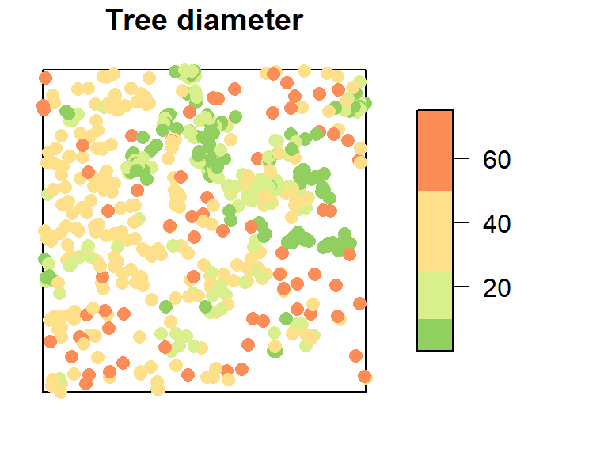
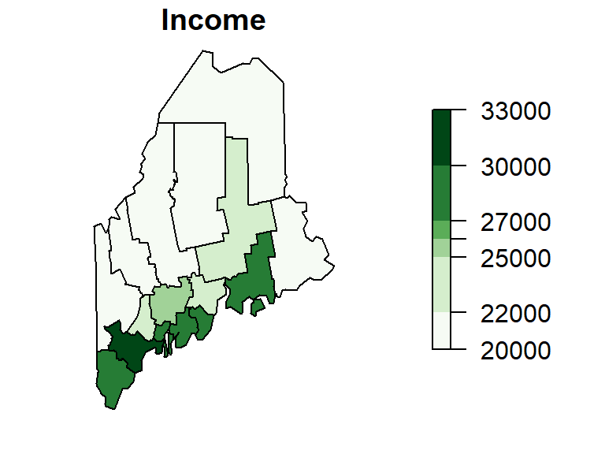

1 Introduction
1.1 What is a GIS?
A Geographic Information System is a multi-component environment used to create, manage, visualize and analyze data and its spatial counterpart. Most datasets encountered in practice can be associated with a location, whether on the Earth’s surface or within some arbitrary coordinate system such as a soccer field or a gridded petri dish. In essence, almost any dataset can be represented in a GIS. The more important question becomes “does the problem of interest need to be analyzed in a GIS environment?”
The answer to this question depends on the analysis’ goal. For example, suppose we are interested in determining the diameter of trees measured within a study plot. In this case, the location of the trees is irrelevant (we only need the diameter measurements themselves).
However, if we wish to determine where large and small trees occur within the plot, location becomes essential and the problem is inherently spatial.
Maps are ubiquitous. We encounter them online, in books, newspapers, and countless mobile applications. Yet we rarely stop to consider how the features shown on a map are represented within a computer. If software is expected to analyze spatial data, then the location and shape of geographic features must be stored in a form that the computer can access and manipulate.
In the tree example, each observation can be represented by a pair of coordinates, such as X and Y values (or longitude and latitude coordinates). These coordinate pairs can be stored alongside the tree attributes in a simple two-dimensional table.
| Diameter | X | Y |
|---|---|---|
| 32.9 | 200.0 | 8.8 |
| 53.5 | 199.3 | 10.0 |
| 68.0 | 193.6 | 22.4 |
| 17.7 | 167.7 | 35.6 |
| 36.9 | 183.9 | 45.4 |
| 51.6 | 182.5 | 47.2 |
A point is the simplest geographic feature to represent digitally because each observation is defined by a single coordinate pair. More complex features, however, require additional data structure. For example, county boundaries enclose areas and are therefore represented as polygons. A polygon is defined by a sequence of points, commonly called vertices, that together trace the feature’s boundary.

Each county in the map above is represented by many vertices connected to form a closed boundary. In addition, each county has associated attributes, such as its median income. How should these coordinate values be stored? How should the income attribute be linked to the correct county and how can the software efficiently retrieve and analyze this information?
These questions reveal the limitations of ordinary spreadsheets for representing geographic features. While a spreadsheet can easily store a few coordinate pairs, it provides no inherent mechanism for describing complex geometries or maintaining the relationships between spatial features and their attributes.
A GIS addresses this challenge through specialized data structures and databases designed specifically for geographic information. These systems store not only attribute values, but also the locations, shapes, and spatial relationships of features such as points, lines, and polygons. Although this may seem like a technical detail, it is the foundation upon which spatial visualization, exploration, and analysis are built.
1.1.1 GIS software
Many GIS software applications are available, both commercial and open source. Two popular applications are ArcGIS Pro and QGIS.
1.1.1.1 ArcGIS Pro
A popular commercial desktop GIS software is ArcGIS Pro developed by Esri (pronounced ez-ree). Esri was once a small land-use consulting firm which did not start developing GIS software until the mid 1970s. The software is available through several licensing options and can be extended with specialized add-on products for applications such as 3D analysis, image processing, and network modeling. A limitation for some users is that ArcGIS Pro is designed primarily for Windows operating systems.
1.1.1.2 QGIS
A popular open-source alternative is QGIS. It is a free and cross-platform GIS application that runs on Windows, macOS, and Linux. QGIS also provides access to tools from several open-source GIS projects, including GRASS GIS. GRASS has been under development since the 1980s and contains a large collection of advanced geospatial analysis and data-processing tools. While GRASS can be used as a stand-alone application, many users access its functionality through the more user-friendly QGIS interface.
1.2 What is Spatial Analysis?
A distinction is made in this course between GIS and spatial analysis. GIS focuses primarily on the storage, management, visualization, and manipulation of spatial data. Spatial analysis, on the other hand, focuses on understanding and explaining spatial patterns using quantitative and statistical methods.
In many GIS applications, the term analysis often refers to operations such as data processing, querying, overlay analysis, buffering, and spatial data manipulation. In this course, however, spatial analysis refers more specifically to the statistical examination of spatial patterns and the processes that may have generated them.
In the previous tree-diameter example, we may wish to draw inferences about the observed spatial pattern. Are large-diameter trees clustered or dispersed? Is tree density consistent throughout the study area? Could environmental factors such as soil type, slope, or moisture availability have influenced the observed distribution? These are the kinds of questions addressed through spatial analysis using quantitative and statistical techniques to explore and explain spatial patterns.
In this course, you’ll learn that software such as ArcGIS Pro and QGIS excel at creating, visualizing, and managing spatial data. However, when the goal is to conduct more advanced statistical analyses of spatial patterns and processes, researchers often turn to specialized quantitative tools. One such tool is R, a free and open-source statistical computing environment.
R offers one of the richest collections of spatial analysis and statistical packages available today. In addition to providing powerful analytical capabilities, R promotes a reproducible workflow in which data preparation, analysis, visualization, and reporting can be documented in a single script. Many of the skills learned in R are transferable to a wide range of quantitative analyses, both spatial and non-spatial.
R can be installed on both Windows and Mac operating systems. Another related piece of software that you might find useful is RStudio which offers a nice interface to R. To learn more about data analysis in R, visit the ES218 course website.
1.3 What’s in an Acronym?
GIS is a ubiquitous technology. Many of you are taking this course in part because you have seen GIS listed as a desirable or required skill in job postings. Often, GIS is viewed primarily as a map-making tool, a perception shared by many casual users in the workforce. While visualizing data is certainly an important function of GIS, it is equally important to consider what data is being visualized and why they are being mapped.
O’Sullivan and Unwin (O’Sullivan and Unwin 2010) use the term accidental geographer to describe individuals “whose understanding of geographic science is based on the operations made possible by GIS software”. Building on this idea, we introduce the term accidental data analyst–someone whose grasp of data and its analysis is limited to the point-and-click functionality of familiar software such as spreadsheets, statistical packages, and GIS platforms.
This observation is not unique to GIS. Similar concerns arose when personal computers made it easy to generate graphs, perform statistical analyses, and produce polished reports with little understanding of the underlying concepts. Software can make sophisticated tools widely accessible, but it cannot replace an understanding of the questions being asked or the assumptions underlying the analysis.
The different purposes of mapping spatial data closely parallel the goals of graphing non-spatial data. John Tukey (Tukey 1972) identified three broad categories of graphical displays:
- “Graphs from which numbers are to be read off–substitutes for tables.
- Graphs intended to show the reader what has already been learned (by some other technique)–these we shall sometimes impolitely call propaganda graphs.
- Graphs intended to let us see what may be happening over and above what we have already described- these are the analytical graphs that are our main topic.”
A GIS-based analogy to Tukey’s categories might be:
- Reference maps (e.g., topographic maps, hiking maps, road maps): designed primarely to navigate landscapes or identify locations of interest.
- Presentation maps: designed to convey a specific narrative. These maps emphasize clarity and effective communication and are often used in reports, news articles, and public presentations. Although we avoid Tukey’s term “propaganda,” it’s worth noting that maps can be powerful tools of persuasion.
- Statistical maps: designed to explore spatial data in ways that reveal patterns. Such maps often involve transforming, summarizing, or modeling data to reveal relationships that would be difficult to detect in a table of raw observations.
This course emphasizes the latter two categories. Our goal is not simply to produce attractive maps, but to use spatial data as a means of asking and answering scientific questions about spatial relationships, spatial patterns, and the processes that generate the observed patterns.
1.4 Course Roadmap
This course is divided into two main parts, each focusing on distinct aspects of spatial data science.
1.4.1 Part 1: Working with Spatial Data
This section introduces foundational GIS concepts and tools for data manipulation and visualization.
- Introduction to GIS & Spatial Analysis
- What is GIS?
- What is spatial analysis?
- GIS software overview
- Feature Representation
- Vector vs. Raster
- Object vs. Field views
- Scale and attribute tables
- GIS Data Management
- File formats and project organization
- Managing data in ArcGIS
- Symbolizing Features
- Color theory and classification
- Choropleth mapping techniques
- Statistical Maps
- Mapping distributions and uncertainty
- Classification intervals and outlier detection
- Pitfalls to Avoid
- MAUP, ecological fallacy, unstable rates
- Good Map Making Tips
- Map elements, layout, and typography
- Spatial Operations and Vector Overlays
- Selection, overlays, and spatial queries
- Coordinate Systems
- Geographic vs. projected systems
- Spatial properties and geodesic geometries
- Map Algebra
- Local, focal, zonal, and global raster operations
1.4.2 Part 2: Spatial Analysis
This section focuses on statistical analysis of spatial patterns.
- Spatial Trends
- First order analysis of field variables
- Fitting polynomial models
- Spatial Autocorrelation
- Second order property of field variables
- Global and local Moran’s I
- Point Pattern Analysis: First order analysis
- Density and distance-based methods
- Testing for CSR processes
- Point Pattern Analysis: Second order analysis
- ANN analysis
- K and L functions
- Paired correlation function
- Spatial Interpolation
- Deterministic (IDW, Thiessen) and statistical (Kriging) methods